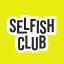

SOURCE REPOSITORYselfishclub/selfish-core
도입 권장
ONE-LINE DECISION
“사업 아이디어 생성기”가 아니라, 새 상품을 만들기 전 반드시 통과하는 코어 인터뷰 게이트로 사용합니다.
FIRST USEReportMode부터
기존 산출물과 반복 요청이 있어 ‘기억’보다 ‘기록’으로 검증하기 좋습니다.
DO NOT시장검증 대체 금지
수요·가격·채널·구매의사는 별도 실험이 필요합니다.
OPERATING RULE상품 단위로 실행
AI Builders Lab 전체보다 ReportMode, Hermes 교육을 각각 인터뷰합니다.
NEXT STEP4주 파일럿
3개 코어 → 증거 비교 → 1개 유료 실험 → v0.2 갱신 순서입니다.
2CORE BLOCKS
3USER TYPES
1QUESTION / TURN
1PFINAL OUTPUT